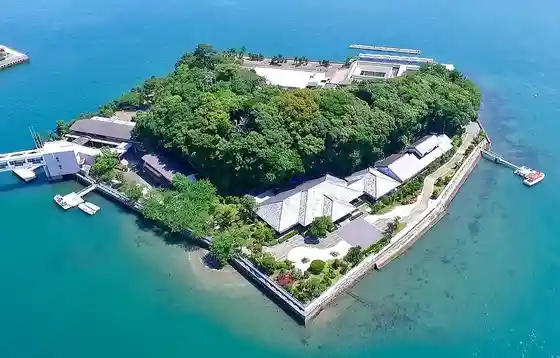
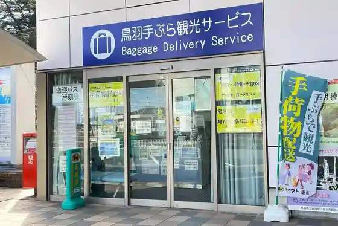
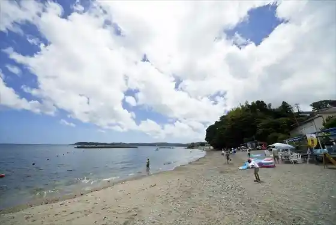
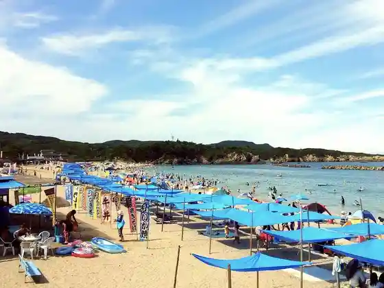

Mikimoto Shinju Shima
Toba, Mie · 0599-25-2028 · Official / source link

Toba Te Bura Kanko Sabisu
Toba, Mie · 0599-25-3019 · Official / source link

Anraku Shima Beach
Toba, Mie · 0599-25-1157 · Official / source link

Chidorigahama Beach
Toba, Mie · 0599-33-6411 · Official / source link

Asarigahama Seaside Park
Toba, Mie · 0599-21-6660 · Official / source link
Wa Gu Sanshain Beach
Toba, Mie · 0599-37-2822 · Official / source link
Sutonhanta Iseshima
Toba, Mie · 0599-37-7298 · Official / source link
Mi no Naru Mori Tokoyo no Sato (Buruberii Kari)
Toba, Mie · 0599-33-7166 · Official / source link
Ama Koya Osatsu Kamado
Toba, Mie · 0599-33-7453 · Official / source link
Kamome no Sanpomichi
Toba, Mie · 0599-25-2751 · Official / source link
Edogawaranpo Kan Toba Minatomachi Literature Museum
Toba, Mie · 0599-26-3745 · Official / source link
Ishigami San (Jinmei Shrine)
Toba, Mie · 0599-33-7453 · Official / source link
Toba Wan Megurito Iruka Shima
Toba, Mie · 0599-25-3145 · Official / source link
M's VILLAGE Campground
Toba, Mie · Official / source link
Ki Sara Bettei Koku TOKI
Toba, Mie · 0599-21-2900 · Official / source link
San no Maru Plaza
Toba, Mie · 0599-25-1157 · Official / source link
Toba Aquarium
Toba, Mie · 0599-25-2555 · Official / source link
Experience Gakushu Toba Aquarium (Ura Gawa Tankentai)
Toba, Mie · 0599-25-2555 · Official / source link
Mikimoto Shinju Shima Experience Gakushu
Toba, Mie · 0599-25-2028 · Official / source link
San Beach Momo Shu
Toba, Mie · 0599-37-3007 · Official / source link
Ishi Kagami Shrine
Toba, Mie · 0599-25-1157 · Official / source link
Kuki Yoshitaka no Do Tsuka
Toba, Mie · 0599-25-1157 · Official / source link
Togen Tera
Toba, Mie · 0599-25-1157 · Official / source link
Yoroi Saki
Toba, Mie · 0599-25-1157 · Official / source link
Kurenai Tsuge Gunsei
Toba, Mie · 0599-25-1157 · Official / source link
Matchan Shokudo
Toba, Mie · 0599-32-2525 · Official / source link
Yatsushiro Shrine
Toba, Mie · 0599-25-1157 · Official / source link
Tezu Kuri Kobo Kirari
Toba, Mie · 0599-25-1372 · Official / source link
Medaka no Gakko
Toba, Mie · 0599-25-1157 · Official / source link
Noboru Ryu no Matsu
Toba, Mie · 0599-33-7453 · Official / source link
Ogi no no Kane
Toba, Mie · 0599-25-1157 · Official / source link
Kan Shima Lighthouse
Toba, Mie · 0599-25-1157 · Official / source link
Ayame Ike
Toba, Mie · 0599-25-1157 · Official / source link
Aso no Ura Bridge
Toba, Mie · 0599-25-1157 · Official / source link
Tsuneyasu Tera
Toba, Mie · 0599-25-1157 · Official / source link
Kanteki Sho Ato
Toba, Mie · 0599-25-1157 · Official / source link
Kamishima Lighthouse
Toba, Mie · 0599-25-1157 · Official / source link
Shirahige Shrine
Toba, Mie · 0599-25-1157 · Official / source link
Kuki Yoshitaka no Kubizuka
Toba, Mie · 0599-25-1157 · Official / source link
Kuki Iwakura Shrine
Toba, Mie · 0599-25-1157 · Official / source link
Kaishi Kazukime Shrine
Toba, Mie · 0599-25-1157 · Official / source link
Akasaki Shrine
Toba, Mie · 0599-25-1157 · Official / source link
Oyamatsumi Shrine
Toba, Mie · 0599-25-1157 · Official / source link
Sanuki Kotohira Miya Toba Bunsha
Toba, Mie · 0599-25-2253 · Official / source link
Kusunoki Michi Waki no Yamatotachibana
Toba, Mie · 0599-25-1157 · Official / source link
Iwaya Yama Burial Mound
Toba, Mie · 0599-25-1157 · Official / source link
Hachiman Shrine
Toba, Mie · 0599-25-1157 · Official / source link
Kan Shima Shrine
Toba, Mie · 0599-25-1157 · Official / source link
Rinsho Tera
Toba, Mie · 0599-25-1157 · Official / source link
Tsubaki Park
Toba, Mie · 0599-25-1157 · Official / source link
Chi Arai Ike
Toba, Mie · 0599-25-1157 · Official / source link
Edogawaranpo no Tsuma Takashi San no Seika
Toba, Mie · 0599-25-1157 · Official / source link
Toba Ichiro Yamakawa Yutaka Kahi
Toba, Mie · 0599-33-6201 · Official / source link
Toba Ryu Hakken Gemba
Toba, Mie · 0599-25-1157 · Official / source link
Kontai Tera
Toba, Mie · 0599-25-1157 · Official / source link
Bon Shio Tera
Toba, Mie · 0599-25-1157 · Official / source link
Ka Gakuon Ki Shrine
Toba, Mie · 0599-25-1157 · Official / source link
Ura Shrine
Toba, Mie · 0599-25-1157 · Official / source link
Karusuto Chikei
Toba, Mie · 0599-25-1157 · Official / source link
Maruko Yama Kurazo Tera
Toba, Mie · 0599-25-1157 · Official / source link
Reisen Tera
Toba, Mie · 0599-25-1157 · Official / source link
Kakinomotohitomaro Kahi
Toba, Mie · 0599-25-1157 · Official / source link
Hiko Taki Shrine
Toba, Mie · 0599-25-1157 · Official / source link
Kani Ana Burial Mound
Toba, Mie · 0599-25-1157 · Official / source link
Choju Sotetsu
Toba, Mie · 0599-25-1157 · Official / source link
Yoroi Saki Lighthouse
Toba, Mie · 0599-25-1157 · Official / source link
Shirongo Hama
Toba, Mie · 0599-25-1157 · Official / source link
Ga Ta Shrine
Toba, Mie · 0599-25-1157 · Official / source link
San Tsu Shima
Toba, Mie · 0599-25-1157 · Official / source link
Ryujin San
Toba, Mie · 0599-25-1157 · Official / source link
Bi Tara Kokorozashi Shrine
Toba, Mie · 0599-25-1157 · Official / source link
Saimyo Tera
Toba, Mie · 0599-25-1157 · Official / source link
Maruko Yama Kurazo Tera no Kotsubugaya
Toba, Mie · 0599-25-1157 · Official / source link
Maruko Yama Kurazo Tera no Isu no Ki Juso
Toba, Mie · 0599-25-1157 · Official / source link
Sugasaki Enchi
Toba, Mie · 0599-25-1157 · Official / source link
Kadono Ikunoshin Memorial Museum to Seitan Hi
Toba, Mie · 0599-25-8255 · Official / source link
Toba Castle Ruins
Toba, Mie · 0599-25-1157 · Official / source link
Toba Castle Ruins Shiroyama Park
Toba, Mie · 0599-25-1157 · Official / source link
Aji no Yado Michi Shio
Toba, Mie · 0599-33-6518 · Official / source link
Isewan Ferii
Toba, Mie · 0599-25-2880 · Official / source link
Tashiro Castle Ruins
Toba, Mie · 0599-25-1157 · Official / source link
Toba Kaisen Ryoriya Katachi Fune Okita
Toba, Mie · 0599-25-7133 · Official / source link
Shiro Taki Daimyojin
Toba, Mie · 090-3382-7079 · Official / source link
I Sha Nami Shrine
Toba, Mie · 0599-25-1157 · Official / source link
Chon Tera
Toba, Mie · 0599-25-1157 · Official / source link
Shimin no Mori Park
Toba, Mie · 0599-25-1157 · Official / source link
Hiyoriyama
Toba, Mie · 0599-25-1157 · Official / source link
Toba Marintaminaru
Toba, Mie · 0599-25-4800 · Official / source link
Kamishima (Shiosai no Butai)
Toba, Mie · 0599-25-1157 · Official / source link
Irako Suzushiro no Ie
Toba, Mie · 0599-25-1268 · Official / source link
Toda Ie Onsen Village
Toba, Mie · 0599-25-2500 · Official / source link
Toba Lookout Ama no Terasu
Toba, Mie · 0599-33-6201 · Official / source link
Toba Rikkai no Museum
Toba, Mie · 0599-32-6006 · Official / source link
Seiho Yama Sei Fuku Tera
Toba, Mie · 0599-55-0061 · Official / source link
Osatsu Ko Minka Ama no Ie Go Hidari Ya
Toba, Mie · 0599-33-6770 · Official / source link
Osatsu Ama Bunka Museum
Toba, Mie · 0599-33-7453 · Official / source link
Toba Ashiyu Tokoro Tomari Yu
Toba, Mie · 0599-25-3019 · Official / source link
Yamaguchi Seiko Kuhi Showa Shiju Hachinen Gogatsu Konryu
Toba, Mie · 0599-25-2500 · Official / source link
Saio Gunko (Kaminingyo)
Toba, Mie · 0599-25-2500 · Official / source link
Isejingu O Sengu Kaminingyo
Toba, Mie · 0599-25-2500 · Official / source link
Kicho Gagaku (San Te Sanju) to (Takashi Toku)
Toba, Mie · 0599-25-2500 · Official / source link
Toba Osho Ya Kadoya (Kyu Koya Ie House)
Toba, Mie · 0599-25-8686 · Official / source link